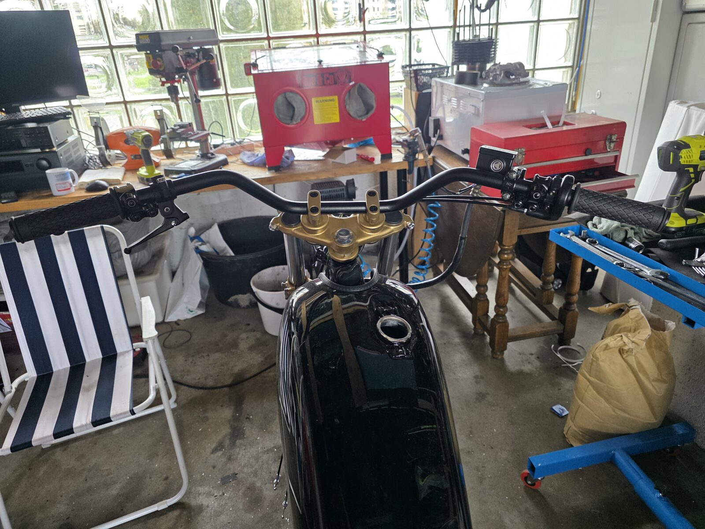
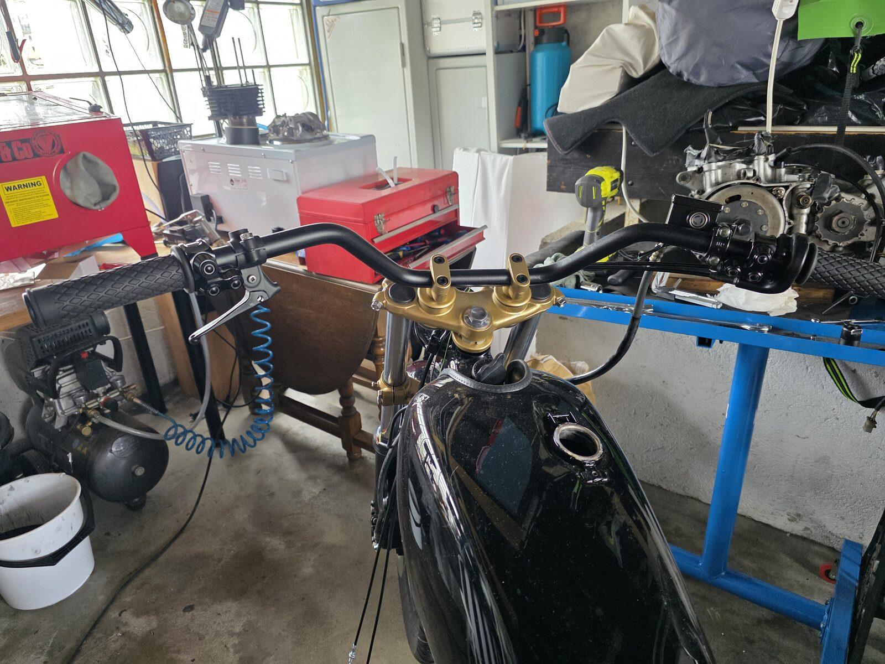
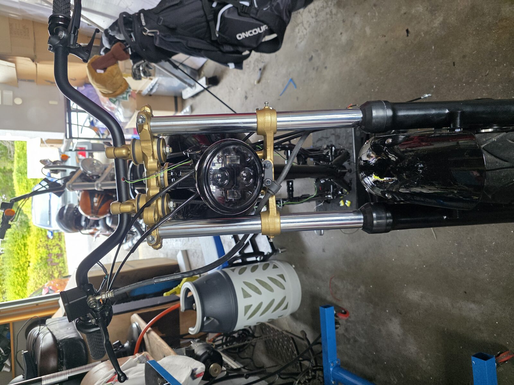
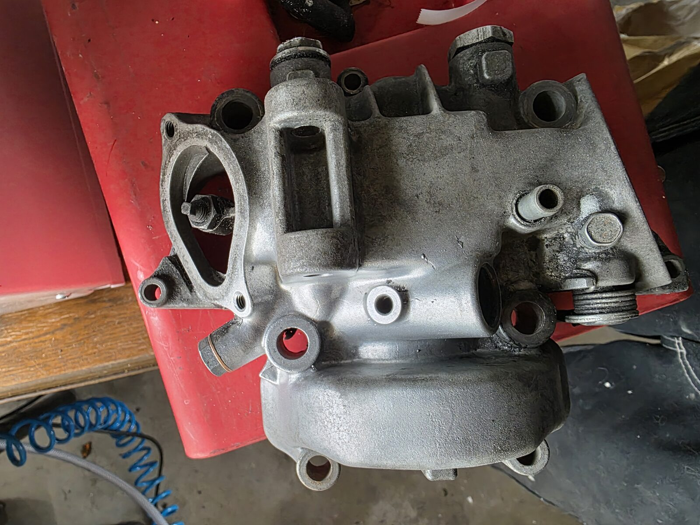
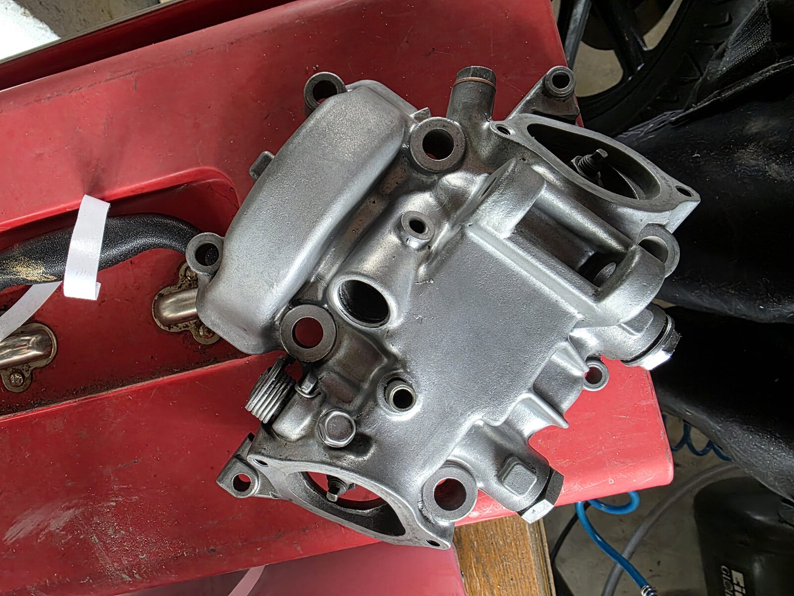
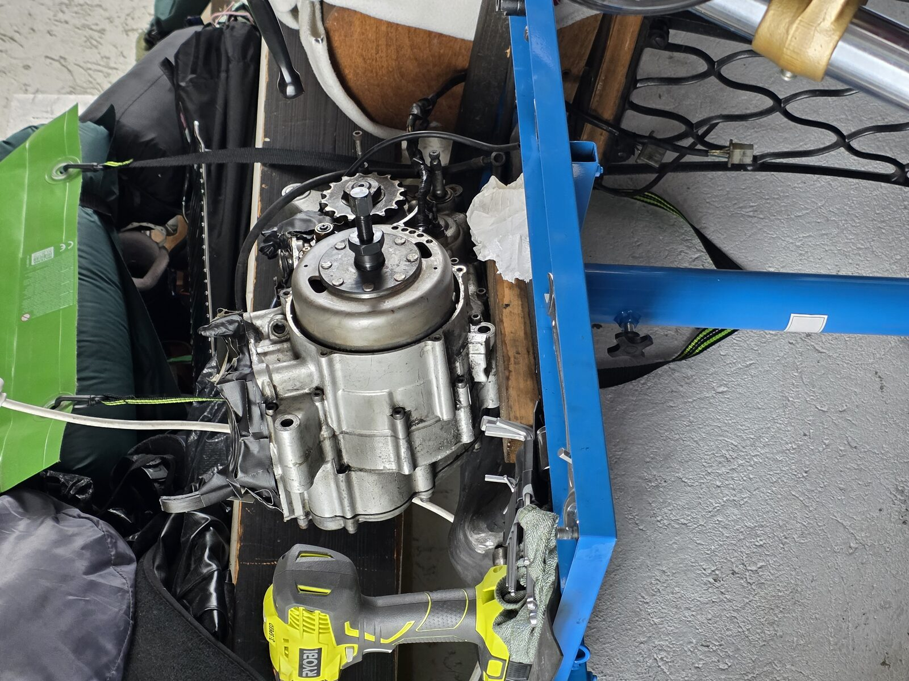
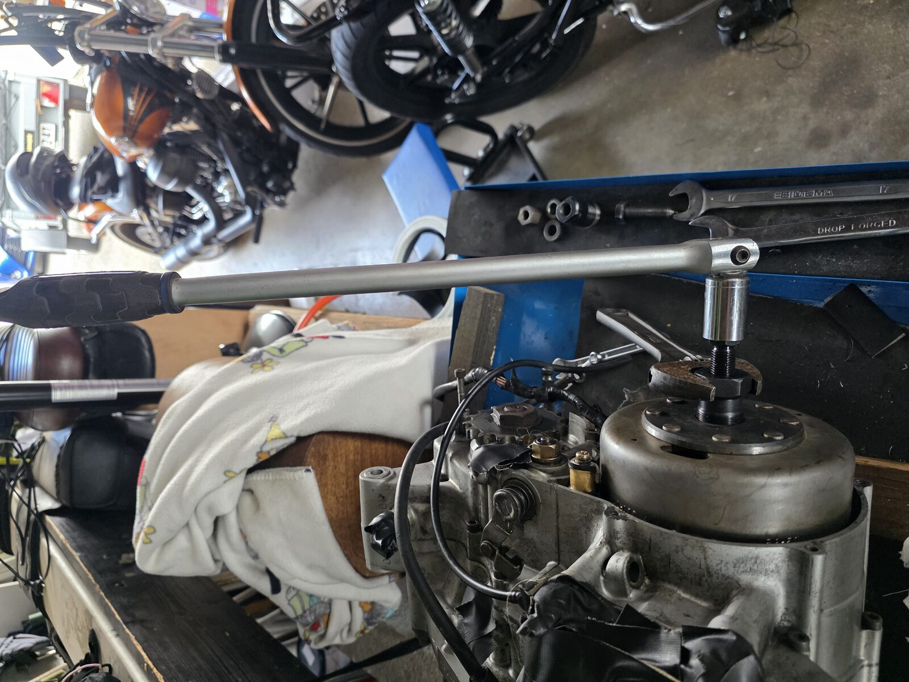

🔧 Styret ferdig, ventilhus glassblåst — men svinghjulet sitter bom fast
Nok en god økt i garasjen. Fronten begynner å bli skikkelig komplett, og motoren har fått litt kjærlighet — men det er én ting som nekter å samarbeide.

🔧 Styret ferdig — med nye konsoller
Styret er nå ferdig montert med de nye konsollene. Grep, hendler og brytere sitter som de skal, og gullfargen på styrekronene står fint til det svarte styret og den svarte tanken. Fronten begynner virkelig å ligne en motorsykkel igjen.

⚡ Testet sammen med mo.unit — det virker!
Det viktigste med hele styrejobben var å få testet oppsettet mot Motogadget mo.unit. All elektronikken er allerede lagt opp i styret, og etter en testrunde fungerer alt som det skal. Det er en skikkelig milepæl — brytere, instrument og styring kommuniserer med mo.unit-en.

✨ Ventilhuset glassblåst
Ventilhuset har fått en runde i blåsekabinettet, og resultatet ble veldig bra. Matt, jevn aluminium uten gammel oljegrime — klar for videre montering. Det er fantastisk hvor stor forskjell en skikkelig glassblåsing gjør på 40 år med patina.


😤 Svinghjulet sitter dønn fast
Og så til utfordringen. Motoren er ute av ramma og står på benken, men svinghjulet vil ikke av. Avdrageren med M27×1,0 venstregjenger er på plass, og svinghjulsholderen holder igjen — men rotoren sitter som støpt på veivtappen.


Planen videre er den klassiske kombinasjonen: krypende olje på konusfugen, skikkelig spenning på avdrageren, et kontant slag på senterbolten med kobberklubbe — og litt lokal varme på navet. Det pleier å få ting til å slippe. Veivtappen er den ømfintlige delen her, så den skal skjermes godt.
📈 Status
Fronten er i praksis ferdig, elektro-delen fungerer mot mo.unit, og motoren får påfyll av TLC. Neste steg blir å vinne kampen mot svinghjulet, og deretter få på VAPE-tenninga som venter i esken sin.
Fortsettelse følger! 🔧🏍️